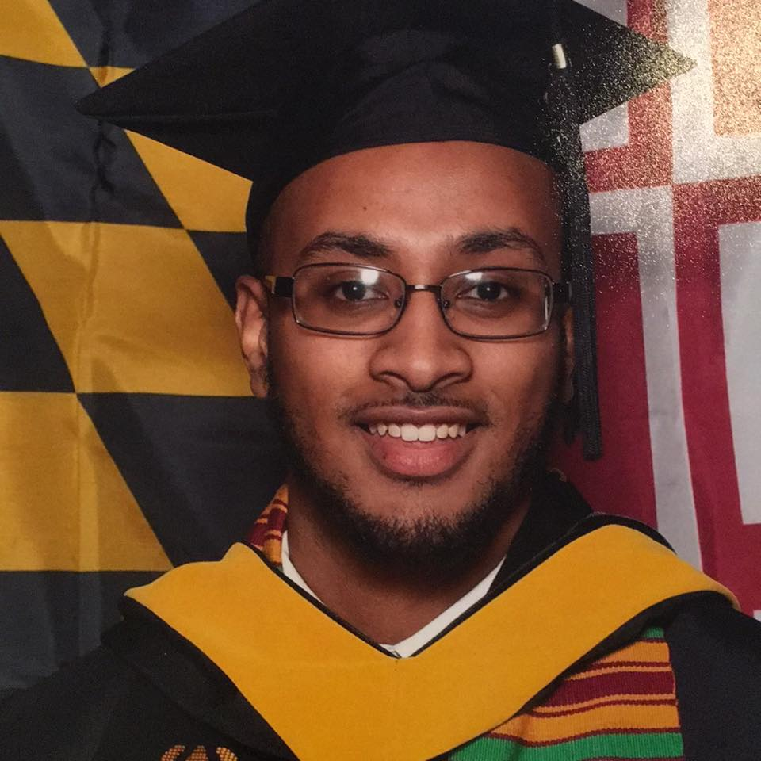

About Me

My name is Jacob Habtemariam, though my friends (usually) call me Jake. I live in Owings Mills, Maryland, where I was born and raised. I graduated from Franklin Highschool in Reisterstown MD in 2013, and from the University of Maryland, College Park in 2017.
While I was born and raised in Owings Mills, I am also a first generation American. My parents and my older sister were all born in Eritrea, a small nation in the Horn of Africa that was once an Italian colony as well as an Ethiopian province, prior to gaining independence in 1991. I speak Tigrinya, the national language of Eritrea. I also play the Kirar, a traditional strung instrument from Eritrea.